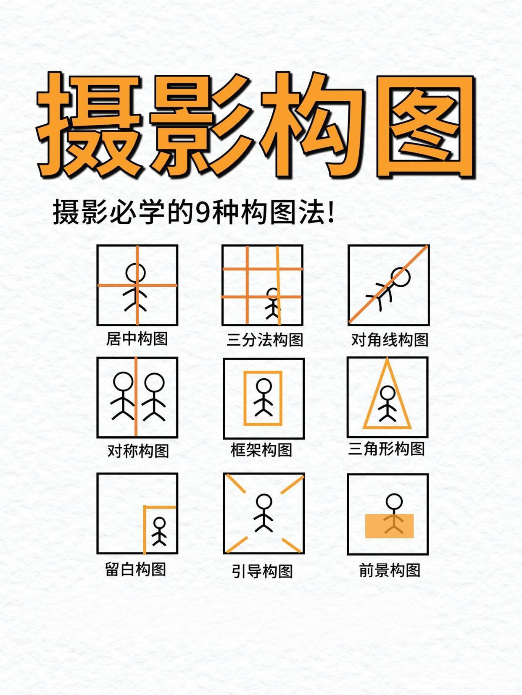

九种摄影构图

1️⃣ 居中构图
优点：就是把我们的主题放到画面中央。容易突出主体，同时拍摄难度低。
注意事项：适合拍摄单个主体，注意避免背景杂乱。
2️⃣ 三分法构图
优点：把我们的主体放在黄金分割线上，画面比例协调，生动不呆板。
注意事项：将主体放在下面的焦点，画面会更协调，将眼睛放在焦点上效果更好。
3️⃣ 对角线构图
优点：主图分布在面面的对角线上，对角线构图能增加线条感和立体感。
注意事项：对角线不限形式，可以是直线，可以是曲线。主体可以放在对角线上，也可以放在画面一角。
4️⃣ 对称构图
优点：对称构图具有稳定、平衡、呼应的特点，画面会显得均匀、协调。
注意事项：对称构图对主体数量没有限制。对称构图也适合拍建筑风光等大场景。
5️⃣ 框架构图
优点：通过框架来突出主体，同时产生画面纵深感，让画面更有层次。
注意事项：可以借助实景，门窗建筑等。也可是虚景，比如光影、视线等。
6️⃣ 三角形构图
优点：画面主体呈现出一个三角形，画面稳定均衡而又不失灵活性。
注意事项：可以是人物组成三角形，也可以是建筑组成三角形。
7️⃣ 留白构图
优点：对于空间的留白，可以营造出画面的氛围感和意境。
注意事项：尽量按照一个方向进行留白，不然会突兀。画面主体不建议过多，来控制画面布局。
8️⃣ 引导构图
优点：引导线会将主体突出，同时引导线也会增加画面趣味性。
注意事项：引导线的选择要多参考透视原理。常见引导线有马路、树木、栏杆、走廊。
9️⃣ 前景构图
优点：给主体提供虚化前景，产生纵深感，增加画面层次感和丰富度。
注意事项：前景的形式不局限，花、人、动物都可以。可搭配大光圈、长焦焦距使用，更容易得到虚化效果。
版权声明：内容均源于网络分享整理，如有侵权请及时联系删除。